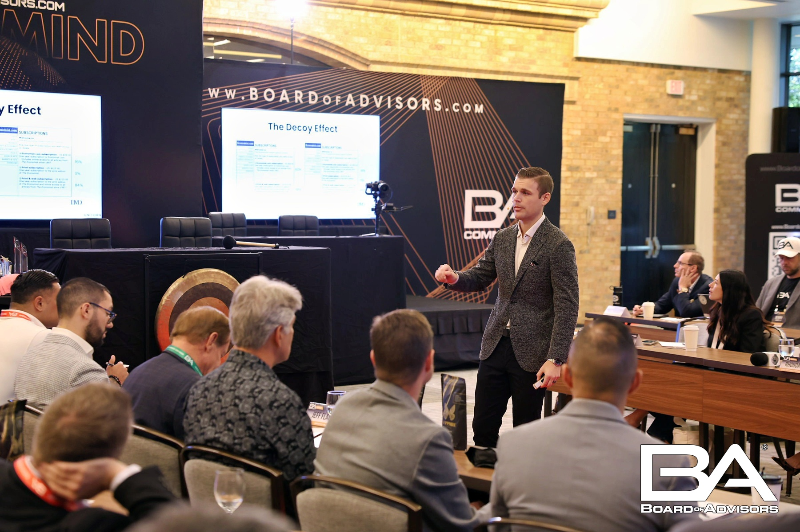
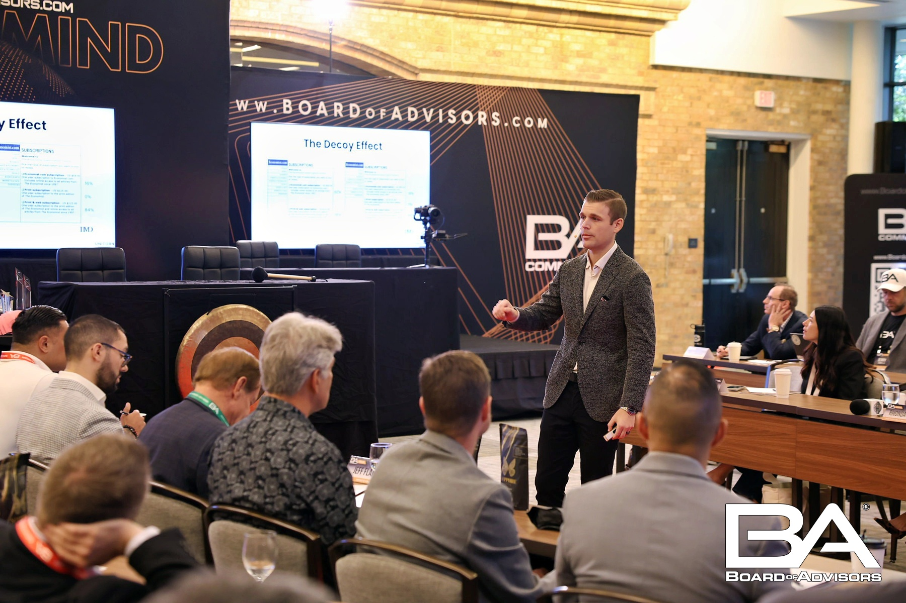

Patrick Campbell sold his company ProfitWell for $200 million in 2022. By any measure, he had won. He'd built something valuable, created wealth for his employees, and achieved what most entrepreneurs only dream about.
But in the months that followed, something unexpected happened. The calls from other founders—the ones seeking his advice, wanting to pick his brain—stopped meaning anything. "Everyone wanted the 'How I Sold My Company' playbook," Campbell told me over coffee in Boston last month. "No one could actually help me figure out what to do next."
Campbell had stumbled onto a truth that successful founders rarely discuss publicly: the higher you climb, the lonelier it gets. At a certain point, your problems become so specific, so high-stakes, that almost no one in your life can relate—let alone help.
"My wife was amazing, but she couldn't tell me whether to take the board seat or start another company," he said. "My investors had their own incentives. My friends thought I should just enjoy being rich. I was making $50 million decisions with no one to talk to."
That's when Campbell discovered Hampton.
If you haven't heard of Hampton, that's by design. The private community for high-growth founders operates almost entirely through word-of-mouth, accepts only 8% of applicants, and until recently had never allowed a journalist inside.
Founded in 2023 by Sam Parr—who sold The Hustle to HubSpot—and serial entrepreneur Joe Speiser, Hampton has quietly become the most sought-after network in tech. Its 1,200+ members have collectively generated over $4 billion in revenue. The roster includes founders who've sold to Google, taken companies public, and built household names.
But what makes Hampton different isn't the success of its members. It's the structure.

Every Hampton member is placed in a "Core Group"—eight founders carefully matched by company size, industry, and growth stage. These groups meet monthly, either virtually or in person, with a trained facilitator. The format is structured but intimate: each session, one or two members present their biggest challenges, and the group works through them together.
"It's like having a personal board of directors," explained Anand Sanwal, CEO of CB Insights, who joined Hampton in its first year. "Except these people actually understand what it's like to make payroll for 200 people while wondering if your next product bet will work."
"I've had investors, advisors, executive coaches. Hampton has been more valuable than all of them combined when it comes to day-to-day decisions."— Patrick Campbell, Founder of ProfitWell
The monthly commitment is roughly three hours—a fraction of what traditional peer groups like YPO or Vistage require. But members say the impact is disproportionate.
Austin Rief, co-founder of Morning Brew, credits a single Hampton conversation with saving him from a hiring mistake that would have cost "at minimum $400,000 and six months of momentum." Sanwal connected with a Hampton member who now handles his data infrastructure—saving CB Insights $40,000 annually compared to their previous vendor.
"I found that vendor in my first week as a member," Sanwal told me. "ROI before my first monthly meeting."
The Isolation Problem No One Talks About
Sam Parr started Hampton to solve a problem he'd experienced firsthand.
"When Joe and I sold our companies, we expected to feel great," he said during a rare phone interview. "And we did, for about a month. Then we realized we'd lost the one thing that made the stress worth it: people who understood."
The research backs this up. A Harvard Business Review study found that 61% of CEOs report feeling lonely in their role, and those who described themselves as isolated were more likely to experience declining performance. Founders face an even more acute version of this problem—they can't share vulnerabilities with employees, often can't be fully honest with investors, and friends and family quickly tire of hearing about Series B terms and CAC ratios.

"The loneliest moment in my career wasn't when I was broke and struggling," said Melissa Parvis, who built Fresh Clean Tees to $50 million in revenue. "It was when I had 200 employees depending on me and no one I could be truly honest with about my doubts."
Parvis joined Hampton after nearly signing a deal that would have cost her millions. The terms seemed reasonable—her lawyers and accountant had approved it. But something felt wrong, and she had no one to call at 2 AM who would understand.
"Within a week of joining Hampton, I mentioned the deal in my Core Group. One member had done a nearly identical transaction two years earlier. He walked me through every clause that would have come back to haunt me."
She renegotiated. The savings: $2.3 million.
"One conversation. That's what it took to pay for a decade of membership—and avoid three years of legal headaches."— Melissa Parvis, Founder of Fresh Clean Tees
Inside the Model
Hampton operates on three levels. At the center is the Core Group—those eight founders who become, in many cases, members' closest professional confidants. Beyond that is the City Chapter, where members attend monthly dinners and events with other Hampton founders in their local area. Currently, there are chapters in 16 cities, from Miami and Austin to London and Toronto.
The outer ring is the broader network: a private Slack community, annual retreats, and curated events where members can tap into the collective knowledge of the full membership.
 

The vetting process is deliberate. Applicants must have built a company with at least $1 million in revenue, raised $3 million or more in funding, or sold a business for $5 million-plus. But the financial bar is just the first filter.
"We're looking for givers," Parr explained. "People who show up to help others, not just extract value. That's harder to screen for than revenue, but it's why the community works."
The rejection rate—92% of applicants don't get in—has become a selling point in itself. Members know that everyone in the room has been vetted, which enables a level of vulnerability and honesty that's rare in professional settings.
"In most networking environments, everyone's performing," said Ryan Holmes, founder of Hootsuite. "At Hampton, the performance drops. You can actually admit you don't know something."
The Economics of Not Being Alone
Hampton membership costs roughly $8,500 per year—a significant investment, but one that members describe as "almost embarrassingly good ROI."
The math is simple, if uncomfortable: a single executive hire gone wrong costs $400,000 or more. A bad contract clause, a vendor mistake, a delayed pivot—these decisions routinely cost founders hundreds of thousands of dollars. Having access to people who've made those mistakes before can shortcut years of expensive learning.
The Hidden Costs of Isolation: Members report that before joining Hampton, they estimate losing $200,000-$500,000 annually to decisions made without adequate peer input—bad hires, unfavorable contracts, missed opportunities, and delayed course corrections.
But many members say the real value isn't financial at all.
"For the first time in years, I have actual friends who understand my life," one member told me, asking not to be named. "Not people I'm trying to impress or sell to. People I can text when things are falling apart."

What Comes Next
Parr is careful not to overpromise. Hampton isn't for everyone, he acknowledged—it's specifically designed for founders and CEOs of digital-economy businesses who are past the early survival stage but still actively building.
"We're not YPO, and we're not trying to be," he said. "Those organizations serve traditional businesses well. We're building for a different founder—someone scaling a SaaS company or an e-commerce brand or a media business. Someone whose problems are specific to this era of entrepreneurship."
The waitlist for many cities is now several months long. New chapters are opening, but slowly—Parr insists that quality matters more than growth.
"We could 10x the membership if we lowered the bar," he said. "But then it would stop working. The magic is in the room. Dilute the room, lose the magic."
For founders like Patrick Campbell, that selectivity is precisely the point. He now attends his Core Group meetings religiously, serves as an informal mentor to newer members, and credits Hampton with helping him navigate his post-exit identity crisis.
"I thought selling my company would answer all my questions," he said. "Instead, it just gave me better questions. Hampton gave me people to ask them to."
When I asked Campbell what he'd tell founders who feel isolated but haven't joined a community like Hampton, he paused for a long moment.
"I'd tell them the cost of going it alone is higher than they think," he said finally. "Not just financially—though that's real. The emotional cost. The decision cost. The cost of not having anyone who truly gets it."
He finished his coffee and smiled. "You don't realize how heavy something is until you find people to help you carry it."
Interested in Joining Hampton?
Hampton is currently accepting applications for new members. The application takes approximately five minutes, and candidates typically hear back within 48 hours.
Explore Membership →Membership is limited. Current acceptance rate: 8%